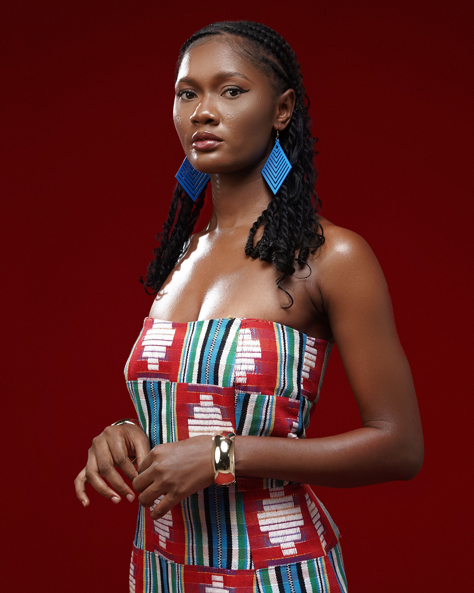

October 18 to 22 · Lagos
The event page combines schedule, venues, participating designers, ticket information, accessibility and related city discovery.
Plan your schedule, save sessions and discover participating designers.

The event page combines schedule, venues, participating designers, ticket information, accessibility and related city discovery.
October 18 · 6:30 PM · Federal Palace
October 19 · 11:00 AM · Victoria Island
October 21 · 10:00 AM · Eko Hotel